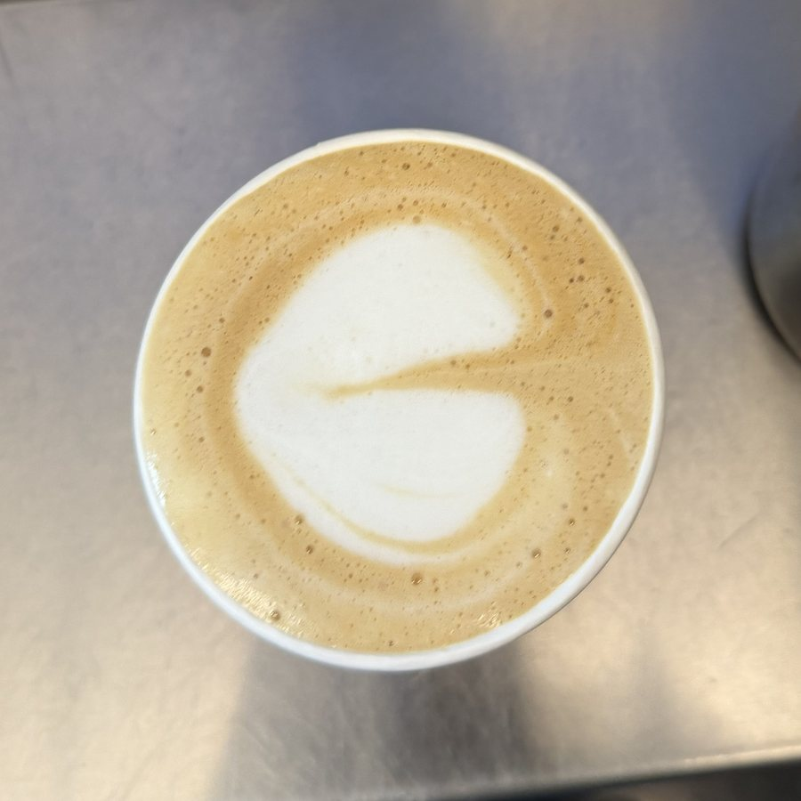
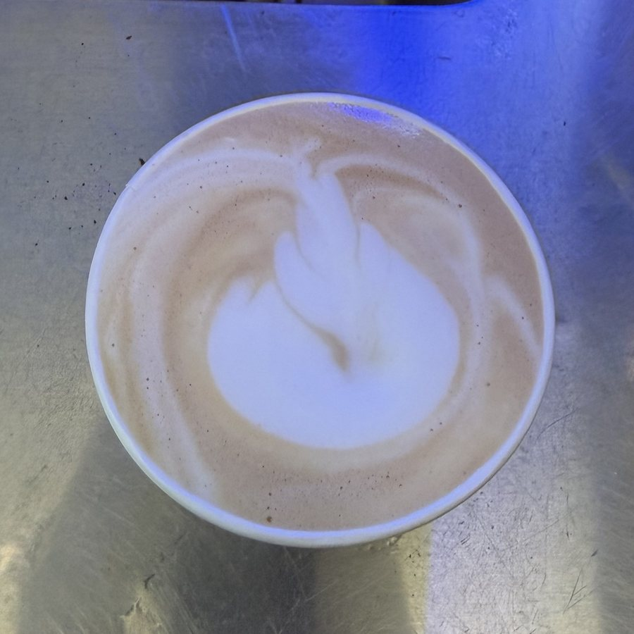
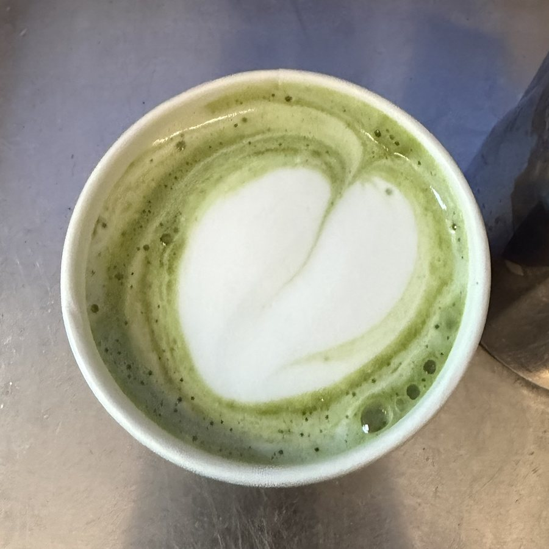

Off the clock · Coffee
Coffee, from both sides of the counter
My favorite way to spend a free day is hopping between coffee shops around the city, tasting how each one's coffee is different and trying the pastries that go with it. A lot of my work gets done at those café tables, too.
My home base is Cloche Coffee in Durham, a small shop where I am almost every weekend. My order never changes: an iced oat cortado with cinnamon on top. I order it at every new shop I try, so I can compare them fairly.
Behind the bar at BSEISU Coffee, I've been teaching myself latte art, and it's going great. Hearts are my go-to, I'm practicing new shapes, and matcha counts too.


